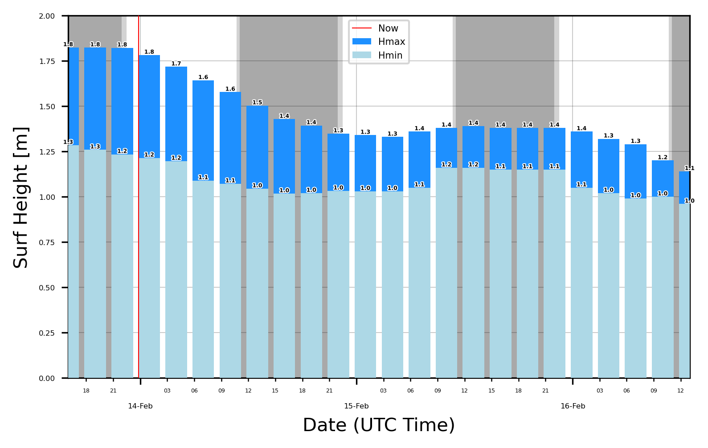

Produce a surf report
[135]:
%load_ext autoreload
%autoreload 2
import matplotlib.pyplot as plt
import matplotlib
import matplotlib.dates as mdates
import datetime
import pandas as pd
import matplotlib.patheffects as pe
from pysurfline import SpotForecast
The autoreload extension is already loaded. To reload it, use:
%reload_ext autoreload
List of known spot id
Spot Id |
Name |
|---|---|
5842041f4e65fad6a7708890 |
Pipeline (USA) |
584204204e65fad6a7709b09 |
Varazze (ITA) |
5842041f4e65fad6a7708b4b |
Uluwatu (IDN) |
[136]:
params = {
"spotId": "5842041f4e65fad6a7708b4b",
"days": 3,
"intervalHours": 3,
}
spot = SpotForecast(params)
spot.api_log
[136]:
['ForecastGetter(Type:wave, Status:200)',
'ForecastGetter(Type:wind, Status:200)',
'ForecastGetter(Type:tides, Status:200)',
'ForecastGetter(Type:weather, Status:200)']
[137]:
report = []
for attr in [
"wave",
"wind",
"weather",
]: # exclude "tides" because of HIGH LOW exact times
report.append(spot.get_dataframe(attr))
report = pd.concat(report, axis=1)
report.head()
[137]:
| utcOffset | surf_min | surf_max | surf_optimalScore | swells | utcOffset | speed | direction | directionType | gust | optimalScore | utcOffset | temperature | condition | |
|---|---|---|---|---|---|---|---|---|---|---|---|---|---|---|
| timestamp | ||||||||||||||
| 2022-02-13 16:00:00 | 8 | 1.284200 | 1.823650 | 2 | [{'height': 1.57, 'period': 14, 'direction': 2... | 8 | 5.70499 | 319.98552 | Onshore | 5.70499 | 2 | 8 | 27.27277 | NIGHT_THUNDER_SHOWERS |
| 2022-02-13 19:00:00 | 8 | 1.259200 | 1.823000 | 2 | [{'height': 1.51, 'period': 14, 'direction': 2... | 8 | 5.76447 | 358.21331 | Onshore | 5.76447 | 2 | 8 | 27.19324 | NIGHT_CLEAR |
| 2022-02-13 22:00:00 | 8 | 1.234200 | 1.822350 | 2 | [{'height': 1.47, 'period': 13, 'direction': 2... | 8 | 3.66975 | 40.78133 | Cross-shore | 3.66975 | 2 | 8 | 26.74509 | NIGHT_CLEAR |
| 2022-02-14 01:00:00 | 8 | 1.214267 | 1.782233 | 2 | [{'height': 1.46, 'period': 13, 'direction': 2... | 8 | 7.67474 | 67.47215 | Cross-shore | 8.66773 | 2 | 8 | 26.97534 | CLEAR |
| 2022-02-14 04:00:00 | 8 | 1.196867 | 1.717383 | 2 | [{'height': 1.46, 'period': 13, 'direction': 2... | 8 | 14.48425 | 139.59396 | Offshore | 16.23947 | 2 | 8 | 27.81131 | CLEAR |
[138]:
surf = report.copy()[["surf_min", "surf_max", "speed", "directionType"]]
surf.head()
[138]:
| surf_min | surf_max | speed | directionType | |
|---|---|---|---|---|
| timestamp | ||||
| 2022-02-13 16:00:00 | 1.284200 | 1.823650 | 5.70499 | Onshore |
| 2022-02-13 19:00:00 | 1.259200 | 1.823000 | 5.76447 | Onshore |
| 2022-02-13 22:00:00 | 1.234200 | 1.822350 | 3.66975 | Cross-shore |
| 2022-02-14 01:00:00 | 1.214267 | 1.782233 | 7.67474 | Cross-shore |
| 2022-02-14 04:00:00 | 1.196867 | 1.717383 | 14.48425 | Offshore |
[139]:
daylight = spot.get_dataframe("sunlightTimes")
daylight
[139]:
| midnight | midnightUTCOffset | dawn | dawnUTCOffset | sunrise | sunriseUTCOffset | sunset | sunsetUTCOffset | dusk | duskUTCOffset | |
|---|---|---|---|---|---|---|---|---|---|---|
| 0 | 2022-02-13 16:00:00 | 8 | 2022-02-13 22:01:56 | 8 | 2022-02-13 22:23:28 | 8 | 2022-02-14 10:47:02 | 8 | 2022-02-14 11:08:35 | 8 |
| 1 | 2022-02-14 16:00:00 | 8 | 2022-02-14 22:02:10 | 8 | 2022-02-14 22:23:40 | 8 | 2022-02-15 10:46:47 | 8 | 2022-02-15 11:08:17 | 8 |
| 2 | 2022-02-15 16:00:00 | 8 | 2022-02-15 22:02:23 | 8 | 2022-02-15 22:23:52 | 8 | 2022-02-16 10:46:30 | 8 | 2022-02-16 11:07:59 | 8 |
[140]:
spot.utcOffset
---------------------------------------------------------------------------
AttributeError Traceback (most recent call last)
/Users/giorgiocaizzi/Documents/GitHub/pysurfline/docsrc/source/examples/surf_report.ipynb Cell 8' in <module>
----> <a href='vscode-notebook-cell:/Users/giorgiocaizzi/Documents/GitHub/pysurfline/docsrc/source/examples/surf_report.ipynb#ch0000024?line=0'>1</a> spot.utcOffset_wave
AttributeError: 'SpotForecast' object has no attribute 'utcOffset_wave'
[ ]:
f, ax = plt.subplots(dpi=300)
surf_colors = {"Hmax": "dodgerblue", "Hmin": "lightblue"}
wind_colors = {"Cross-shore": "gold", "Offshore": "green", "Onshore": "darkred"}
surf["hist_color"] = surf["directionType"].map(colors)
# zorder 0
# night and day
for i, x in daylight.iterrows():
ax.axvspan(x["midnight"], x["dawn"], color="darkgrey", zorder=0)
ax.axvspan(x["dawn"], x["sunrise"], color="lightgrey", zorder=0)
ax.axvspan(x["sunset"], x["dusk"], color="lightgrey", zorder=0)
ax.axvspan(
x["dusk"],
x["midnight"] + datetime.timedelta(days=1),
color="darkgrey",
zorder=1
)
#zorder 1
# grid
ax.grid(axis="y", which="major", zorder=1, linewidth=0.1, color="k")
ax.grid(axis="x", which="major", zorder=1, linewidth=0.1, color="k")
#zorder 2
#bars
p1 = ax.bar(
surf.index,
surf["surf_max"],
color="dodgerblue",
label="Hmax",
zorder=2,
width=0.1,
)
p2 = ax.bar(
surf.index,
surf["surf_min"],
color="lightblue",
label="Hmin",
zorder=3,
width=0.1,
)
#zorder 3
# barlabels
ax.bar_label(
p1,
label_type="edge",
zorder=3,
size=3,
fmt="%.1f",
weight="bold",
path_effects=[pe.withStroke(linewidth=1, foreground="w")],
)
ax.bar_label(
p2,
label_type="edge",
zorder=3,
size=3,
fmt="%.1f",
weight="bold",
path_effects=[pe.withStroke(linewidth=1, foreground="w")],
)
# dates index
ax.figure.autofmt_xdate()
ax.xaxis.set_minor_locator(mdates.HourLocator(byhour=(0, 3, 6, 9, 12, 15, 18, 21)))
ax.xaxis.set_major_locator(mdates.DayLocator())
ax.set(xlabel="Date (UTC Time)", ylabel="Surf Height [m]")
ax.xaxis.set_major_formatter(mdates.DateFormatter("%d-%b"))
ax.xaxis.set_minor_formatter(mdates.DateFormatter("%H"))
# Rotates and right-aligns the x labels so they don't crowd each other.
ax.tick_params(axis="x", which="major", pad=10)
for label in ax.get_yticklabels(which="major"):
label.set(rotation=0, size=4)
for label in ax.get_xticklabels(which="major"):
label.set(rotation=0, horizontalalignment="center", size=4)
for label in ax.get_xticklabels(which="minor"):
label.set(horizontalalignment="center", size=3)
# now line
ax.axvline(
datetime.datetime.now(datetime.timezone.utc),
color="r",
label="Now",
linewidth=0.5,
zorder=5,
)
# limits
if surf["surf_max"].max() < 2:
ax.set_ylim([0, 2])
ax.set_xlim([surf.index[0], surf.index[-1]])
ax.legend(fontsize=5)
<matplotlib.legend.Legend at 0x12bfd5d00>

[ ]: